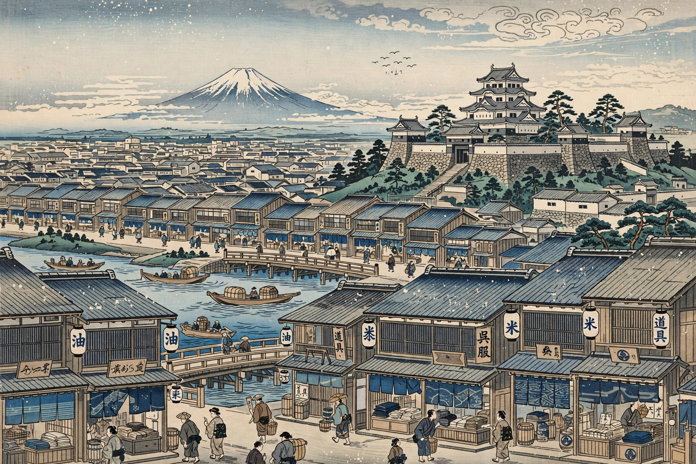

| Period | 1603 – 1868 (or 1600 – 1868) |
|---|---|
| Location | Japan |
| Government | Tokugawa shogunate (bakufu), seated at Edo (Tokyo) |
| Founded by | Tokugawa Ieyasu |
| Preceded by | Azuchi–Momoyama period |
| Followed by | Meiji period (Meiji Restoration) |
The Edo period, also known as the Tokugawa period, is the period between 1603 and 1868 in the history of Japan, when Japan was under the rule of the Tokugawa shogunate and some 300 regional daimyo. Emerging from the chaos of the Sengoku period, the Edo period was characterised by economic growth, strict social order, isolationist foreign policies (sakoku), and a flourishing of arts and culture.

Edo, seat of the Tokugawa shogunate, grew into one of the world's largest cities.
Tokugawa Ieyasu, victor at Sekigahara (1600) and appointed shogun in 1603, established a system in which the shogunate controlled the great domains directly and supervised the daimyo through measures such as sankin-kōtai, requiring lords to alternate residence between their domains and Edo. Society was formally ordered into samurai, peasants, artisans and merchants, under a neo-Confucian ideology. From the 1630s the seclusion edicts expelled the Portuguese, suppressed Christianity, and confined foreign trade to the Dutch and Chinese at Nagasaki, Koreans at Tsushima, and the Ryukyu trade at Satsuma.
Peace and urban wealth nourished the ukiyo "floating world": kabuki theatre, bunraku puppet drama, woodblock prints by Hokusai and Hiroshige, and the prose and poetry of townsmen. Matsuo Bashō perfected the haiku and the haibun travel diary in works such as Narrow Road to the Deep North (1694). Literacy spread through temple schools (terakoya), and Dutch studies (rangaku) kept a narrow window open to Western science.
The arrival of Commodore Perry's "black ships" in 1853 and the unequal treaties that followed discredited the shogunate. After the Boshin War, power was "restored" to the Emperor Meiji in 1868, ending more than 260 years of Tokugawa rule and opening Japan's rapid modernisation.